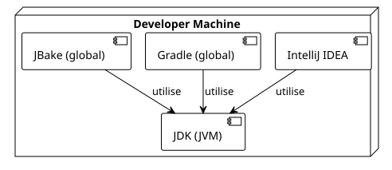

Article 0 : Setting Up the Environment for Creating Gradle Plugins
Published on 22 September 2025
Introduction
To develop Gradle plugins effectively, a well-configured development environment is indispensable. A good setup will save you time, reduce frustrations, and ensure the consistency of your builds.
-
Le JDK(Java Development Kit), because Gradle and JBake run on the JVM.
-
Un IDEmodern (IntelliJ IDEA) with good support for Kotlin and Gradle.
-
Gradleitself, to initialize projects.
-
JBake, the engine of our static site.

1. The JDK: Gradle’s Engine
Gradle is an application that runs on the Java Virtual Machine (JVM). Consequently, installing a JDK is an absolute prerequisite.
Which version to choose?
It is recommended to use an LTS (Long-Term Support) version of Java. Currently,JDK 17 ou JDK 21are excellent choices.
Installation via SDKMAN! (Recommended)
SDKMAN! is a great tool for managing versions of many SDKs, including Java and Gradle.
Install SDKMAN!
curl -s "https://get.sdkman.io" | bash source "$HOME/.sdkman/bin/sdkman-init.sh"Install a JDK version
# Pour lister les versions de Java disponibles sdk list java
# Pour installer Java 17 (par exemple, la distribution Temurin)
sdk install java 17.0.8-temVerify the installation
java -versionYou should see the version you just installed displayed.
2. The IDE: IntelliJ IDEA
For the development of Gradle plugins with the Kotlin DSL,IntelliJ IDEAis the tool of choice. Its integration with Gradle and Kotlin is unmatched.
-
Community Edition:Free and largely sufficient to get started.
-
Ultimate Edition:Paid, it offers advanced features for web and database development.
Download the version that suits you from the JetBrains site: https://www.jetbrains.com/idea/download/
The IDE will automatically detect your`build.gradle.kts` et `settings.gradle.kts`files, offering you powerful autocompletion, code navigation, and built-in debugging tools.
3. Gradle: The Build Tool
Even though each project will use its own version of Gradle via the Gradle Wrapper, it is useful to have a global installation of Gradle for tasks such as initializing new projects (gradle init).
Installation via SDKMAN!
Just like for the JDK, SDKMAN! simplifies the installation of Gradle.
Install Gradle
sdk install gradleVerify the installation
gradle -vThis command will display the versions of Gradle, Kotlin, Groovy, and the JDK being used.
4. JBake: The Static Site Generator
JBake is the tool we will use to transform our source files (like this one) into a static website. Having a local installation is practical for previewing changes.
Installation via SDKMAN!
As with the other tools, SDKMAN! is the simplest method.
Install JBake
sdk install jbakeVerify the installation
jbake -vThis command will display the JBake version and the Java environment information it uses.
5. The Gradle Wrapper: The Absolute Best Practice
Once your project is created (which we will see in the next article), you should no longer use the global`gradle`command. Instead, you will use theGradle Wrapper(./gradlew), a script included in your project.
Why?
-
Reproducibility:The Wrapper ensures that every person working on the project (including your CI/CD server) uses exactly thesame version of Gradle, thus eliminating build errors due to different environments.
-
Simplicity:No need to install Gradle manually to contribute to a project.
Simply clone the repository and run`./gradlew`.
A typical command will look like this:
# Ne pas faire : gradle build
# À faire :
./gradlew build6. Docker and Portainer: For Reproducible Builds (Optional)
Although not strictly necessary for writing a plugin, Docker and Portainer are modern DevOps tools that greatly facilitate the creation of reproducible builds and the management of your environment.
Installing Docker Engine
Docker allows you to package your application and its dependencies into a container.
Install Docker via the official script:
curl -fsSL https://get.docker.com -o get-docker.sh sudo sh get-docker.shManage Docker without sudo (recommended):
Add your user to the`docker`group.
sudo usod -aG docker $USERdocker run hello-worldManage Docker with Portainer (GUI)
Portainer is a lightweight web interface for managing your Docker containers.
Create a volume for Portainer data:
docker volume create portainer_dataLaunch the Portainer container:
docker run -d -p 8000:8000 -p 9443:9443 --name portainer --restart=always -v /var/run/docker.sock:/var/run/docker.sock -v portainer_data:/data portainer/portainer-ce:latestYou can now access the Portainer interface on`https://localhost:9443`.
Conclusion
Your environment is now ready! You have a JDK, the most suitable IDE, Gradle, and JBake. With the addition of Docker, you are also set to create containerized and reproducible builds. This solid foundation will allow you to focus on the essentials: developing powerful and useful plugins.
In the next article, we will use the`gradle init`command to generate the structure of our first plugin project.